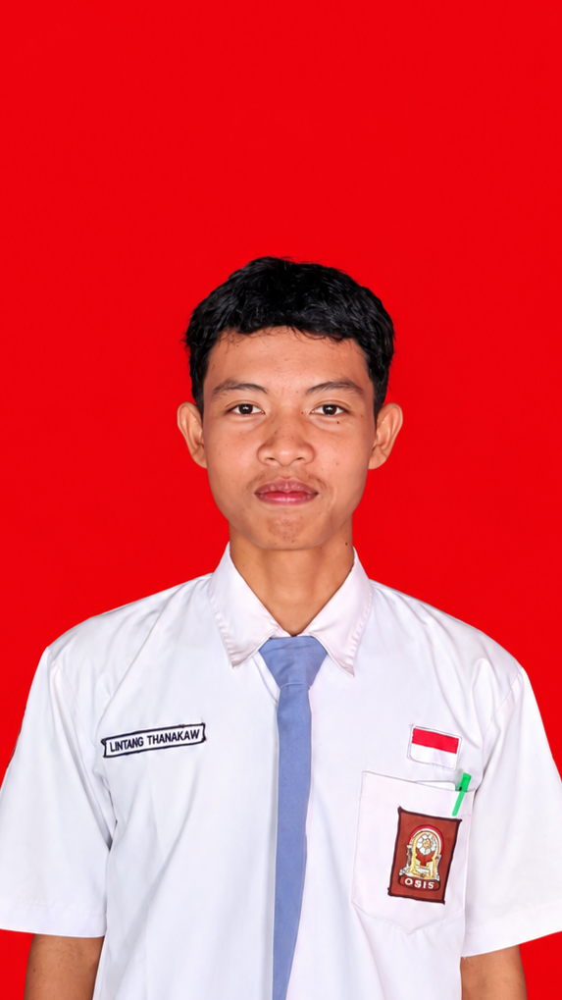
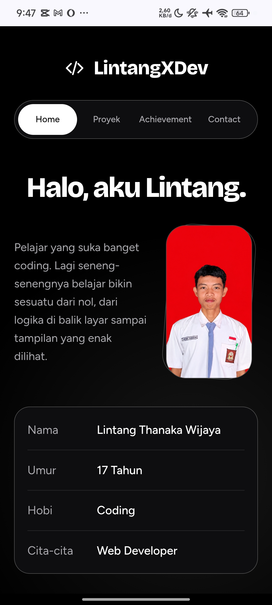
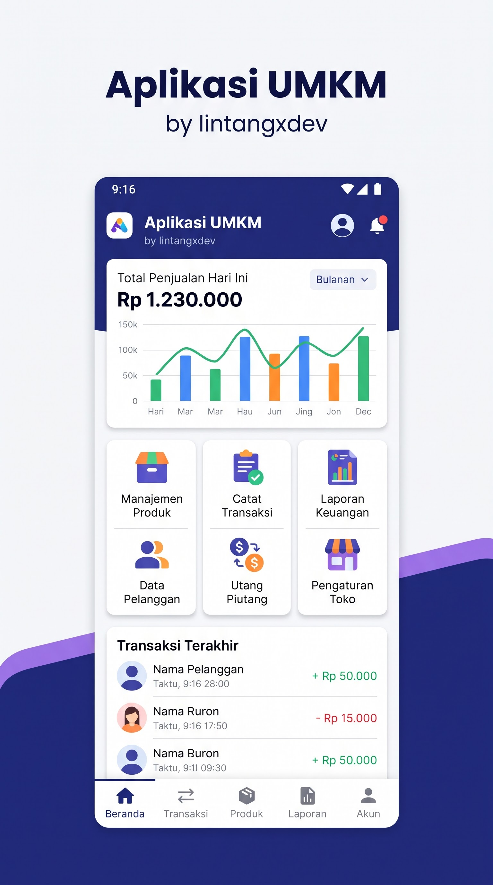
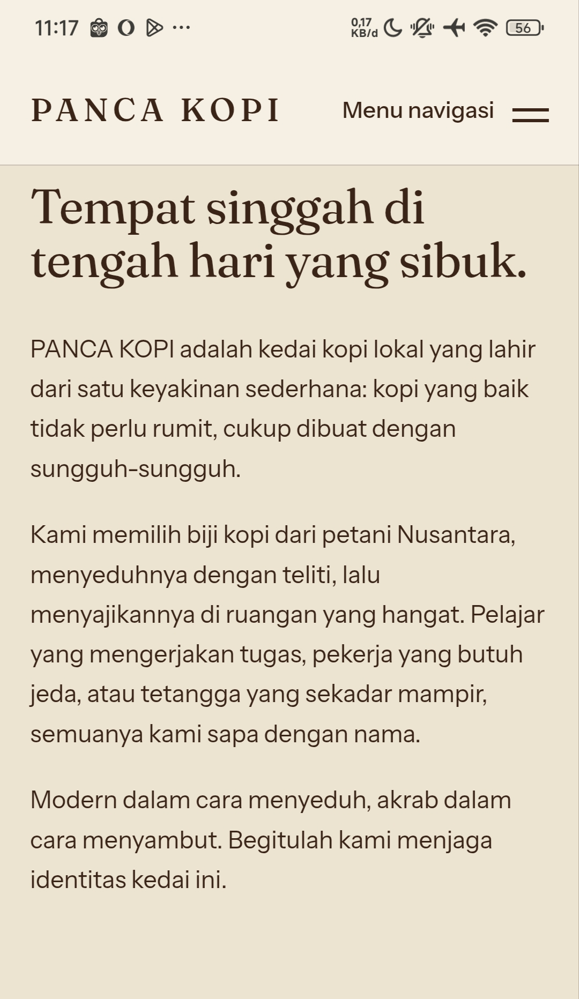

LintangXDev
Halo, aku Lintang.
Pelajar yang suka banget coding. Lagi seneng-senengnya belajar bikin sesuatu dari nol, dari logika di balik layar sampai tampilan yang enak dilihat.
- NamaLintang Thanaka Wijaya
- Umur17 Tahun
- HobiCoding
- Cita-citaWeb Developer
Bahasa favorit
Python jadi nomor satu buat aku. Kalau soal web, yang paling sering aku pakai itu HTML, CSS, dan JavaScript.
Riwayat hidup
-
Kenalan sama komputer
Dari kecil aku suka utak-atik HP dan laptop. Penasaran kenapa satu tombol di layar bisa menjalankan sesuatu, dan siapa yang bikin semua itu.
-
Pertama nyoba HTML
Pertama kali bikin halaman web dari HTML polos. Tampilannya jelek banget, tapi senengnya waktu muncul di browser susah dijelasin.
-
Kenalan sama CSS
Di sini aku sadar tampilan bisa diatur sesuka hati, dari warna, jarak, sampai animasi kecil. Jadi betah ngulik berjam-jam.
-
JavaScript bikin halaman hidup
Tombol akhirnya bisa ngapa-ngapain. Aku mulai bikin hal-hal kecil kayak kalkulator dan daftar tugas buat latihan.
-
Jatuh cinta sama Python
Sintaksnya enak dibaca dan cocok banget buat belajar logika. Dari sini aku makin suka mikirin cara menyelesaikan masalah lewat kode.
-
Belajar berpikir lebih runtut
Aku mulai belajar memecah masalah jadi langkah-langkah kecil, bukan cuma nyalin contoh. Salah, debug, coba lagi, jadi kebiasaan sehari-hari.
-
Lolos OSN tingkat kabupaten
Hasil dari belajar yang konsisten. Bukan akhir perjalanan, justru bikin makin semangat buat lanjut ke level berikutnya.
OSN Kabupaten -
Sampai sekarang
Masih terus belajar dan bikin proyek. Targetku makin rapi nulis kode dan punya lebih banyak karya yang bisa dipamerkan.
Riwayat sekolah
-
PAUD dan TK
Total dua tahun, satu tahun di PAUD dan satu tahun di TK. Nama TK-nya aku lupa, yang jelas pernah sekolah di sana.
-
SDN 01 Wonoharjo
Sekolah dasarku. Di sini aku mulai belajar dasar-dasar dan mulai kenal teman-teman seperjuangan.
-
SMPN 03 Bumi Agung
Lanjut ke SMP. Masa ini aku mulai tertarik sama dunia komputer dan teknologi.
-
SMAN 01 Bumi Agung
Sekolahku yang sekarang. Karena PAUD dan TK masing-masing satu tahun, waktu umur 16 kemarin aku sudah kelas 12, dan sekarang umurku 17 tahun.
Kelas 12

Foto LintangProyek
Beberapa hal yang pernah aku bikin.

Proyek 1
Proyek 2
Proyek 3Butuh website landing page, portfolio, dll?
Aku terima pembuatan website untuk UMKM, toko kecil, portfolio pribadi, sampai halaman undangan. Tampilannya rapi, enak dibuka di HP, dan bisa disesuaikan dengan warna dan logo usahamu.
- DP 50% di awal. Pembayaran setengah dulu sebelum website mulai dikerjakan.
- Dikerjakan sampai jadi. Kamu bisa lihat hasilnya dulu dan minta revisi kecil.
- Lunas, baru dikirim. Setelah sisanya dibayar, website langsung aku kirim ke kamu.
Atau mau hosting dan pasang domain tapi nggak bisa?
Tenang, aku juga menyediakan layanan hosting dan domain. Kamu tinggal bilang maunya apa, urusan pasang dan setting sampai websitemu bisa dibuka lewat alamat sendiri biar aku yang beresin.
- Hosting saja. Sudah punya domain? Cukup pasang hostingnya di sini.
- Domain saja. Bantu cari dan daftarkan nama domain untuk usahamu.
- Paket hosting dan domain. Sekalian beres, semua bisa lewat sini.
Achievement
Pilih salah satu buat lihat buktinya.
 Pencapaian lainnya
Pencapaian lainnya
Contact
Mau ngobrol atau kerja bareng? Hubungi aku lewat sini.